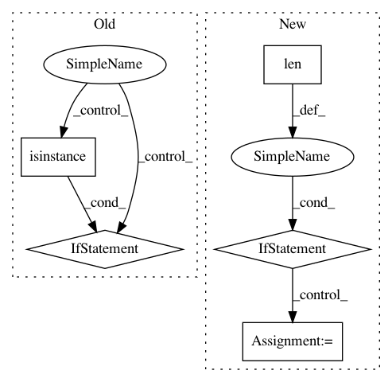

65e4f94e45f32d9cbe99337d74ed9c1ebad3412a,keras/layers/core.py,AutoEncoder,__init__,#AutoEncoder#Any#Any#Any#Any#Any#,299
Before Change
if encoder is None or decoder is None:
raise Exception("Please specify the encoder/decoder layers")
if not isinstance(encoder, Layer) or not isinstance(decoder, Layer):
raise Exception("Only Layer types are supported as inputs for autoencoders")
self.input_dim = encoder.input_dim
self.hidden_dim = decoder.input_dim
self.output_reconstruction = output_reconstruction
self.tie_weights = tie_weights
After Change
if not encoders or not decoders:
raise Exception("Please specify the encoder/decoder layers")
if not len(encoders) == len(decoders):
raise Exception("There need to be an equal number of encoders and decoders")
// connect all encoders & decoders to their previous (respectively)
for i in xrange(len(encoders)-1, 0, -1):
encoders[i].connect(encoders[i-1])
decoders[i].connect(decoders[i-1])
decoders[0].connect(encoders[-1]) // connect the first to the last
self.input_dim = encoders[0].input_dim
self.hidden_dim = reversed([d.input_dim for d in decoders])
self.output_reconstruction = output_reconstruction
self.tie_weights = tie_weights
self.encoders = encoders
In pattern: SUPERPATTERN
Frequency: 3
Non-data size: 5
Instances
Project Name: keras-team/keras
Commit Name: 65e4f94e45f32d9cbe99337d74ed9c1ebad3412a
Time: 2015-06-03
Author: jason.ramapuram@viasat.com
File Name: keras/layers/core.py
Class Name: AutoEncoder
Method Name: __init__
Project Name: autonomio/talos
Commit Name: 75edd1e191f7ad38ae71bd31cba87d1faedbb6a1
Time: 2019-02-20
Author: mailme@mikkokotila.com
File Name: talos/utils/string_cols_to_numeric.py
Class Name:
Method Name: string_cols_to_numeric
Project Name: deepmipt/DeepPavlov
Commit Name: 1a6d4020c53e2b39e224616481528fad901cbd4e
Time: 2018-10-15
Author: yoptar@gmail.com
File Name: deeppavlov/core/commands/infer.py
Class Name:
Method Name: predict_on_stream